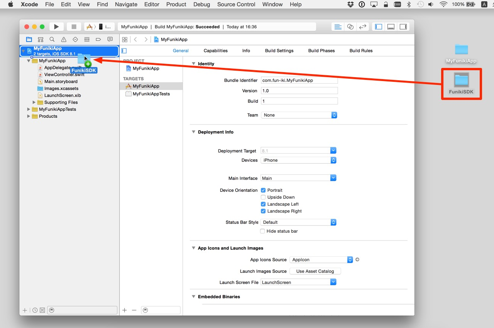
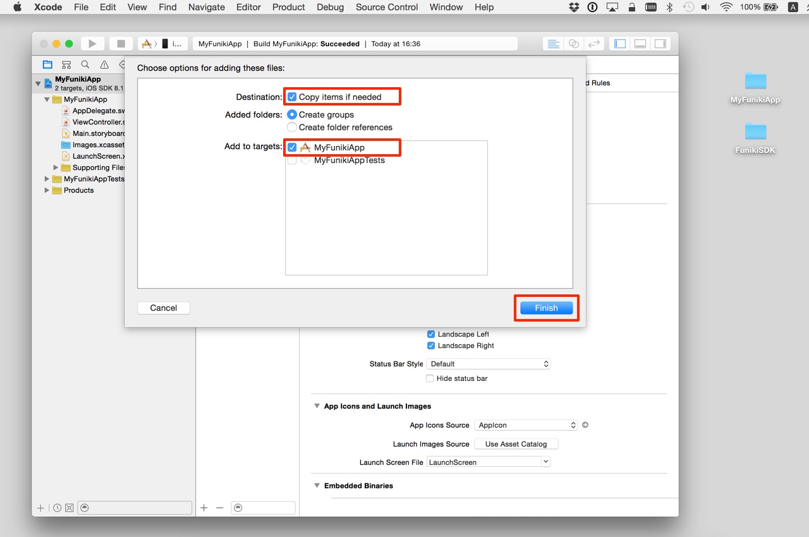
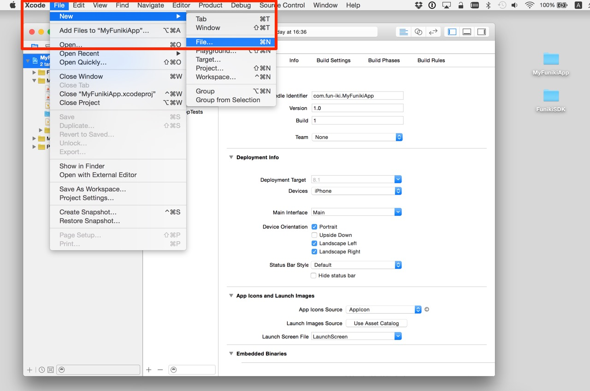
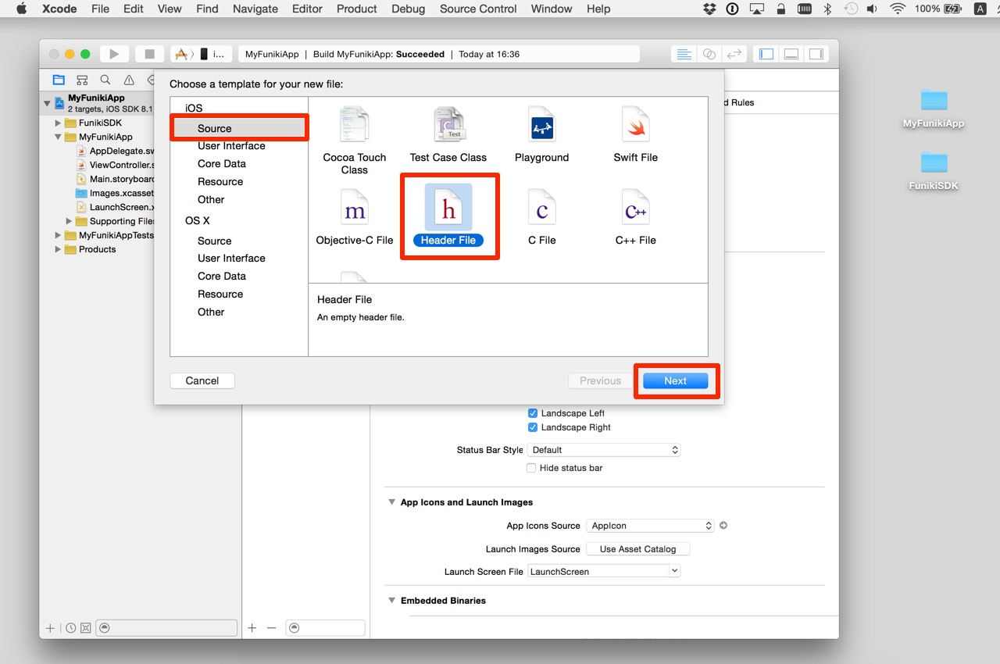
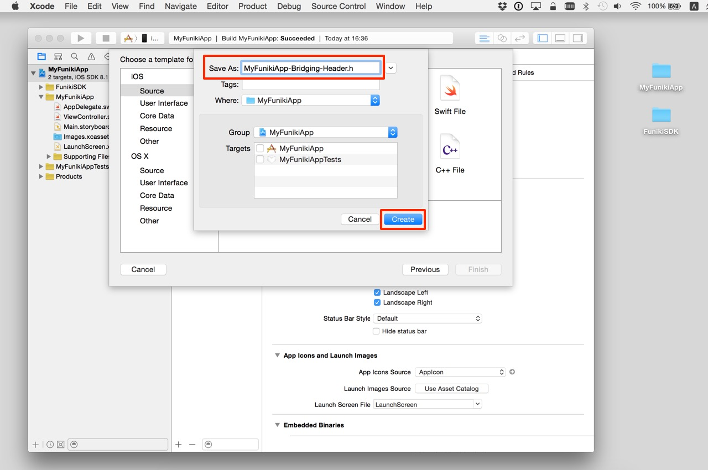
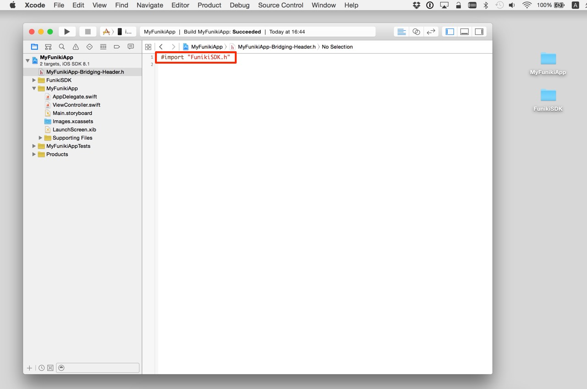
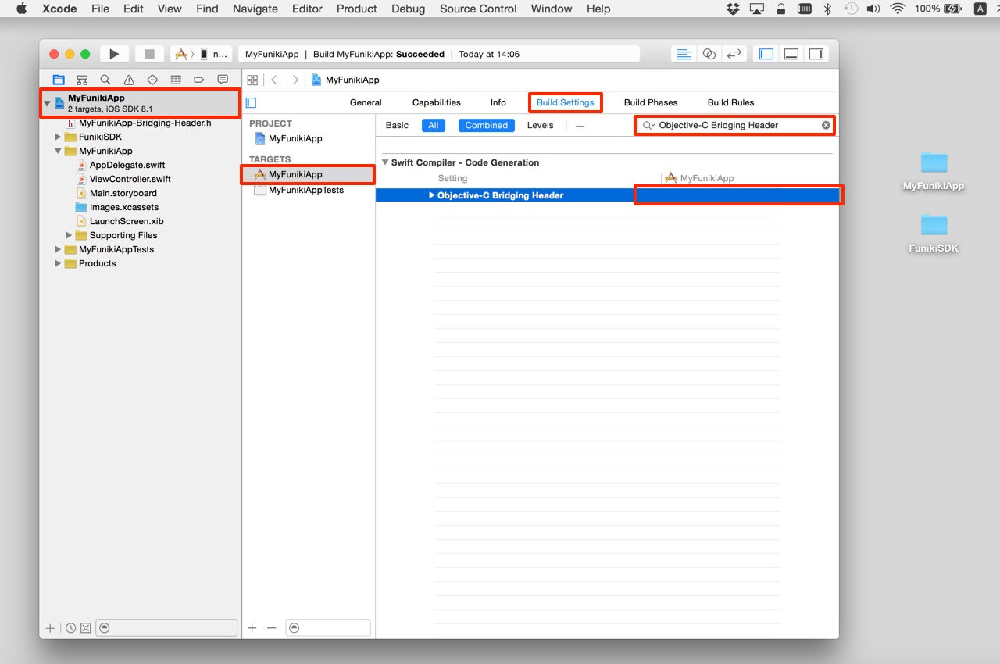
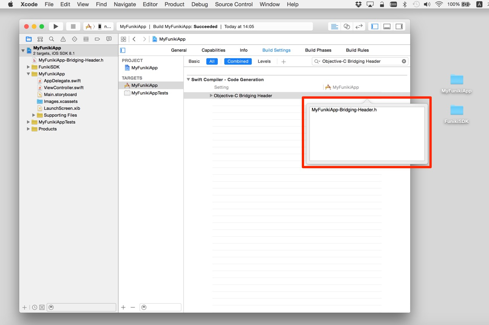

<!DOCTYPE html>
<html>
<head>
  <meta charset="UTF-8">
  <title>雰囲気メガネSDKを既存のプロジェクトで使用する(Swift)</title>
  <style type="text/css">
  <!--
  body { font-family: sans-serif}
  h1  { border-bottom: solid 1px #000000; }
  h2  {  }
  img { width: 50%; }
  pre { background-color: #EEEEEE; color: #000000; }
  -->
  </style>
</head>
<body>
  <h1>雰囲気メガネSDKをSwiftで使用する</h1>
  <p>
    雰囲気メガネSDKをSwiftのプロジェクトで使用するには<br>
    <strong>
      ・雰囲気メガネSDKの追加<br>
      ・Bridging-Headerの追加・設定<br />
    </strong>
    が必要です。<br />
  </p>
  <h2>雰囲気メガネSDKの追加</h2>
  <p>
    - Xcodeで既存のプロジェクトを開く。<br />
    - Finderで「FunikiSDK」フォルダをドラッグして、Xcodeのプロジェクトにドロップする。<br />
    <br />
    <br />
    - 「Copy items if needed」にチェックをする。<br />
    - 「Add to targets」のアプリにチェックが入っていることを確認する<br />
    - 「Finish」をクリックする。<br />
    <br />
    <br />
    <br />
  </p>
  <h3>Bridging-Headerの追加・設定</h3>
  <p>
    - 「File」メニューの「New」から「File...」を選択する。<br />
    <br />
    <br />
    - 「iOS」の「Source」を選択する。<br />
    - 「Header File」を選択して、Nextをクリックする。<br />
    <br />
    <br />
    - 「Save As:」に 「<プロジェクト名>-Bridging-Header.h」 と入力して「Create」をクリックする。<br />
    <br />
    <br />
    - <プロジェクト名>-Bridging-Header.hを開く。<br />
    - <プロジェクト名>-Bridging-Header.h の内容をすべて削除する。<br />
    - <プロジェクト名>-Bridging-Header.h に以下のコードを記述する。<br />
  </p>
  <pre>

    #import "FunikiSDK.h"
  </pre>
  <p>
    <br />
  </p>
  <p>
    - Xcodeのプロジェクト・エディタを開く。<br />
    - TARGETSからアプリのターゲットを選択する。<br />
    - Build Settingsをクリックする。<br />
    - 検索ボックスに「Objective-C Bridging Header」と入力し、Returnキーを押す。<br />
    - 「Objective-C Bridging Header」の行を、ダブルクリックする。<br />
    <br />
    <br />
    <br />
    - 「<プロジェクト名>-Bridging-Header.h」と入力して、Returnキーを押す。<br />
    <br />
    <br />
    <br />
    これで、Swiftのプロジェクトで雰囲気メガネSDKを使用する準備ができました。
  </p>
</body>
</html>
